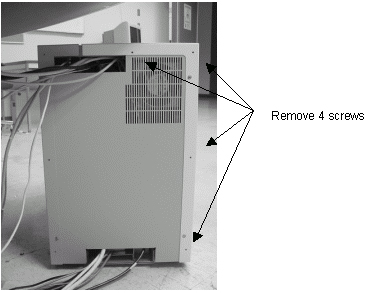
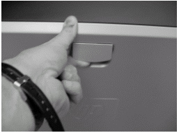
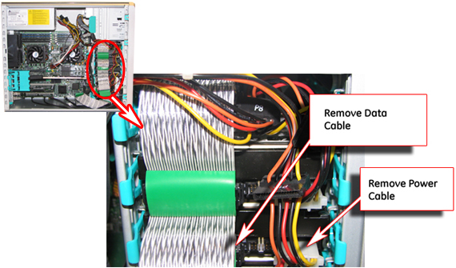
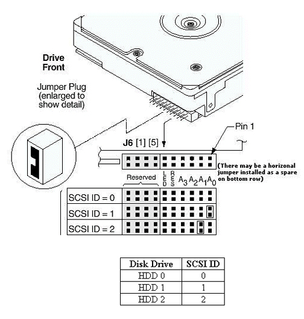

Operating Documentation
Direction 5500113, Rev# 3
Discovery MR750 3.0T Service Methods
Module Version 5.0, Version Date 11/5/09
Operating Documentation |
| Required Persons | Preliminary Reqs | Procedure | Finalization |
|---|---|---|---|
| 1 | Not Applicable | 1 hour | Not Applicable |
Due to the way the hard disk drives are partitioned, if one of the drives becomes corrupted (has no read/write capabilities), all the information saved on the system since the most recent archiving will be lost. Since performance issues may arise when hard disk drives are different makes and models, order three new drives and replace all of the old ones whenever a drive is corrupted.
| Item | Qty | Effectivity | Part# | Manufacturer | |
|---|---|---|---|---|---|
| Phillips Screwdriver | 1 | - | - | - | |
| Item | Qty | Effectivity | Part# | Manufacturer | |
|---|---|---|---|---|---|
| Hard Disk Drive | 3 | - | - | - | |
| ||||
| Electrocution Hazard! | ||||
| Dangerous Voltages Exist Inside The Goc When Power Is Applied. | ||||
| Before Servicing Any Components Inside The Goc, Lockout/Tagout The Workspace. |
Lockout Tagout the GOC before beginning the replacement.
Remove the four screws in the rear that secure the left side panel shown in the illustration below.
Illustration 1: Removing Screws on Left Side Panel

Remove the left side panel by sliding it back.
Remove the left panel of the PC by lifting up on the latch.
Illustration 2: Removing Left Panel

Remove the power and data cables from the top hard disk drive as shown in the illustration below.
Illustration 3: Removing Power and Data Cables

Remove the top drive by pinching the green restraining tabs together, then slowly removing the drive.
Illustration 4: Location of Restraining Tabs

There are three drives in this system. SCSI addresses that need to be set for these drives are provided in the table below.
| Drive Slot | SCSI ID |
| Top | 0 |
| Middle | 1 |
| Bottom | 2 |
To configure the SCSI address for the drive, first look at the drive and determine the manufacturer. If the drive is made by Seagate, proceed to Step 7.a. If the drive was made by Fujitsu, proceed to Step 7.b.
| NOTE: | If the drive is from a vendor other than Fujitsu or Seagate, or it is not shown in this procedure, reference the jumper setup label on top of the drive for guidance. |
Refer to Illustration 5 to configure a Seagate Disk Drive.
Illustration 5: Seagate Disk Drive Jumper Settings

Refer to Illustration 6 for Fujitsu Disk Drive jumper settings.
Illustration 6: Fujitsu Disk Drive Jumper Settings

| SCSI Device | Jumper Setting |
| SCSI = 0 | No jumpers between Pins 1 through 8 |
| SCSI = 1 | Jumper between Pins 1 and 2 |
| SCSI = 2 | Jumper between Pins 3 and 4 |
After giving the hard drive a unique SCSI ID, install the hard drive into the appropriate slot until it snaps into place, and reattach the power and data cables to the drive.
Perform a Load from Cold software installation. See 15.x Host Operating System Software Load.